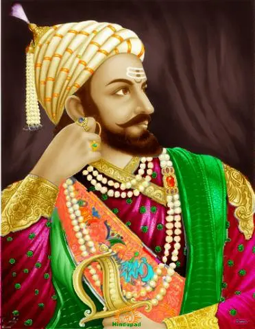

Chhatrapati Shivaji Maharaj
( छत्रपती शिवाजी महाराज )
1630 - 1680
Chhatrapati of the Maratha Empire
Shivaji Maharaj was born in the hill-fort of Shivneri, near the city of Junnar, which is now in Pune district. Scholars disagree on his date of birth. The Government of Maharashtra lists 19 February as a holiday commemorating Shivaji's birth (Shivaji Jayanti). Shivaji was named after a local deity, the goddess Shivai Devi. Shivaji's father Shahaji Bhonsle was a Maratha general who served the Deccan Sultanates.His mother was Jijabai the daughter of Lakhuji Jadhavrao of Sindhkhed, a Mughal-aligned sardar claiming descent from a Yadav royal family of Devagiri.
Family Details
- Father - Shahjiraje Bhosale
- Mother - Jijabai
- Wife - Saibai , Soyrabai , Putalabai , Kashibai , Sakwarbai , Lakshmibai, Saganabai, Gunwantibai.
- Childrens - Chhatrapati Sambhaji Raje Bhosle , Chhatrapati Rajaram Raje Bhosle , Ambika, Kamala, Deepa,Rajkunwar,Ranu, Sakhu